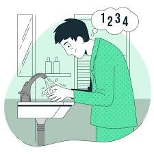
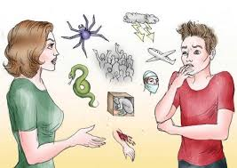
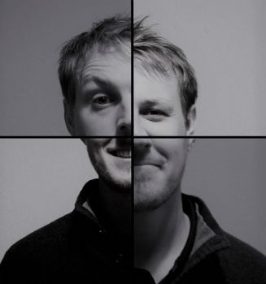

Tabla de Trastornos Emocionales
| Imagen | Trastorno | Concepto | Ejemplo |
|---|---|---|---|
| Depresión | Estado persistente de tristeza y pérdida de interés. | Una persona que deja de disfrutar actividades que antes amaba. | |
| Ansiedad | Preocupación y miedo intensos y constantes. | Una persona que evita situaciones sociales por temor a ser juzgada. | |
| Trastorno Bipolar | Alteración entre episodios de manía y depresión. | Pasar de un estado de euforia extrema a profunda tristeza. | |
| Estrés Postraumático | Reacciones emocionales intensas tras un evento traumático. | Un veterano de guerra que revive el evento en sueños. | |
|  | Trastorno Obsesivo-Compulsivo | Patrón de pensamientos y miedos que llevan a comportamientos repetitivos. | Una persona que verifica puertas cerradas múltiples veces antes de salir. |
| Trastorno de Estrés Agudo | Reacción intensa de corta duración ante un evento traumático. | Un testigo de un accidente que tiene pesadillas recurrentes. | |
|  | Fobia Específica | Miedo intenso e irracional hacia un objeto o situación específica. | Alguien que evita volar debido al miedo extremo a los aviones. |
|  | Trastorno de Identidad Disociativo | Presencia de dos o más identidades distintas dentro de una persona. | Una persona que alterna entre personalidades con diferentes nombres y recuerdos. |
Reflexiona y Comparte
Si sientes que alguno de estos trastornos te afecta, no dudes en buscar ayuda profesional.